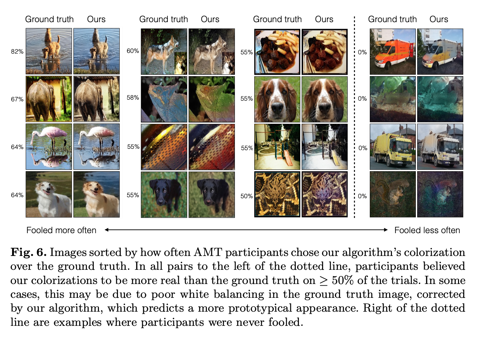

Evaluating Quality
How would you go about proposing a way to determine how quality an algorithm is if its is based on plausibility? The authors propose a subjective technique using Amazon’s Mechanical Turk (AMT), as well as quantitive results.
1. Perceptual Realism
By using AMT, they setup an experiment for each of the algorithms tested to source the subjective predictions of 40 human individuals to attempt to classify which image was falsely colorized. If the same colorization was used for both images, you would expect the human classifier to be wrong 50% of the time; interestingly, there are some sets of photos that either have white balance issues, or odd colors, where the humans prefer the false colorization over the real images colors. Figure 6 gives examples of which pictures caused the human graders to be fooled more often or not.

2. Semantic Interpretability
Semantic Interpretability is just a confusing way of asking a ML model trained on ImageNet of picture with real colors how well a falsely colorized picture still holds pertinent information. For instance, the experimenters used VGG, and found that with ground truth colors, the algorithm classified at 68.3%, while colorization schemes dropped that performance anywhere from 59% to 54%.
3. Raw Accuracy (AuC)
They computed raw prediction accuracy as a by-metric. This is not the perfect metric because their aim was a plausibility, not reaching ground truth. They use this method to show the influence of desaturated values on raw performance, by re-balancing the pixel values due to rarity, and found their algorithm produces state of art results.